La Cisterna · Santiago
Edificio
Las Brisas

Edificio residencial de 105 departamentos en La Cisterna, con una propuesta de vivienda colectiva que integra distintas tipologías de departamentos y espacios comunes.
- Ubicación
- Av. Las Brisas 181, La Cisterna
- Año
- 2021
- Tipología
- Edificio de departamentos
- Superficie
- 4.735 m²
- Unidades
- 105 departamentos
- Mandante
- Inmobiliaria Pajaritos Dos
- Arquitectura
- Franulic y Asociados
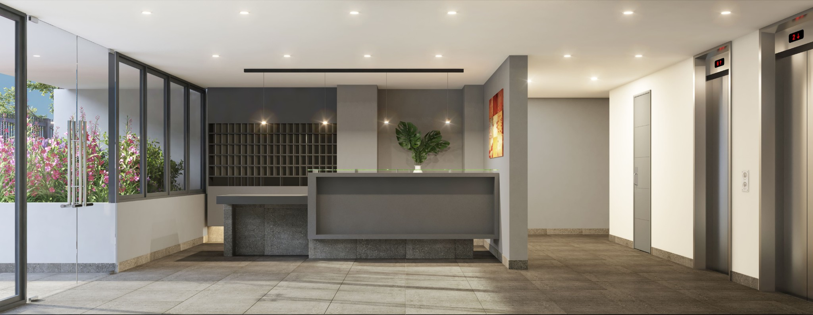
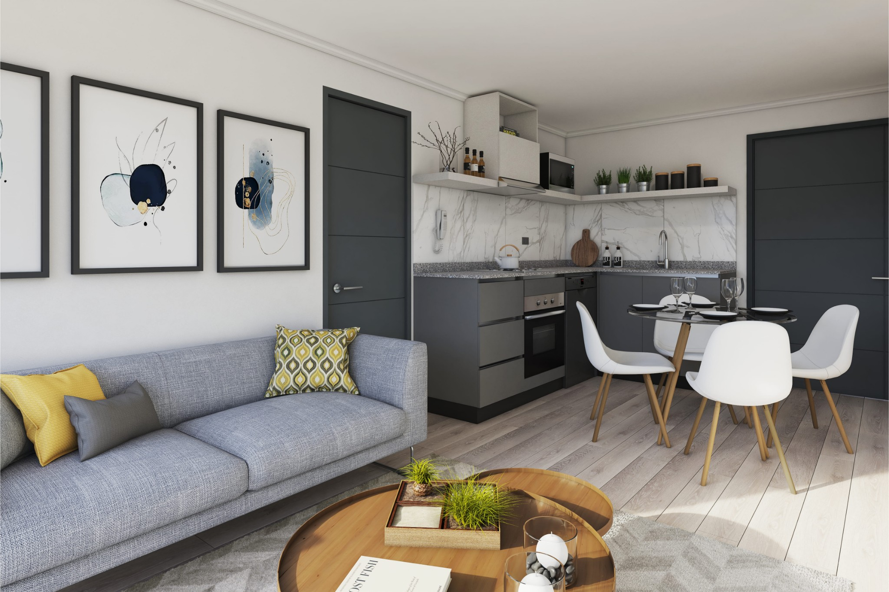
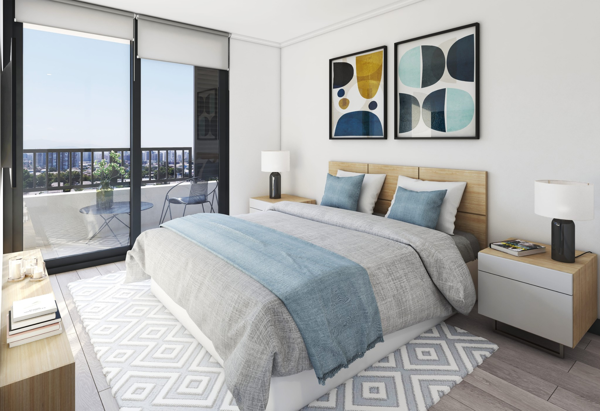
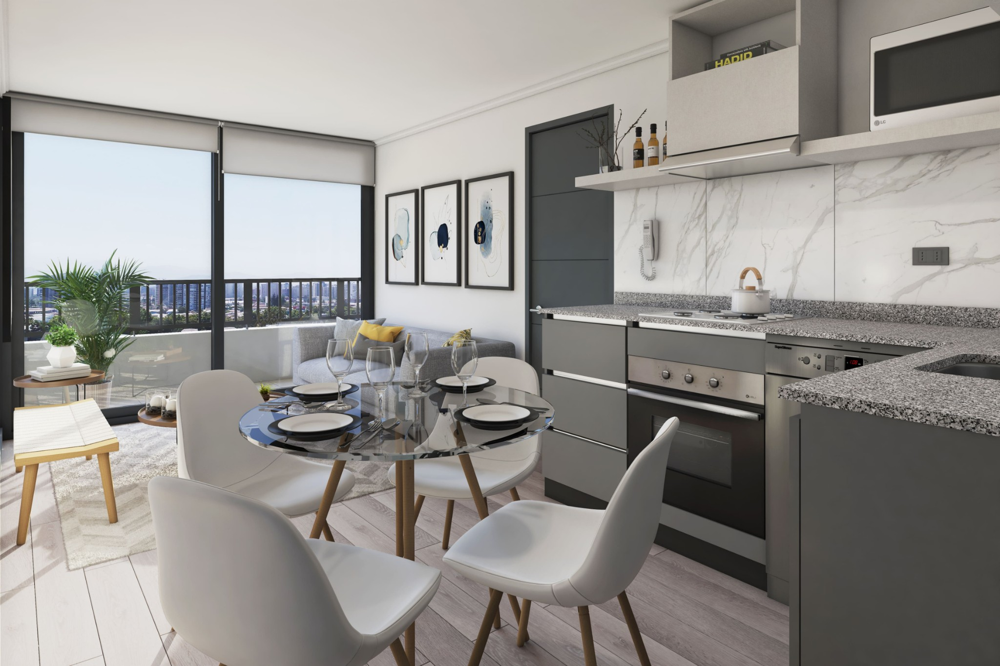
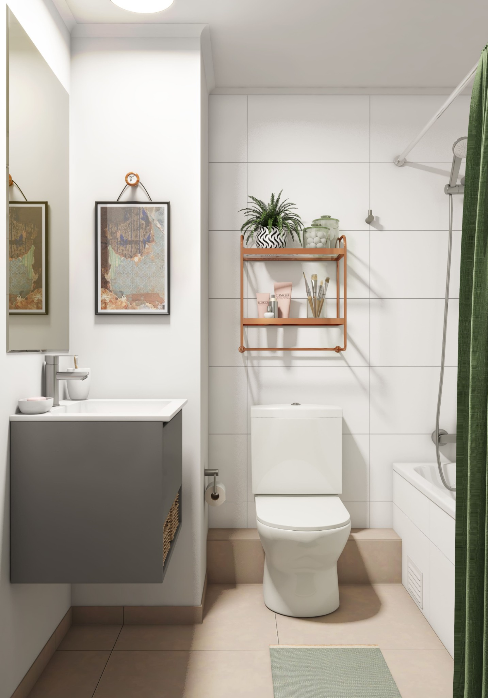
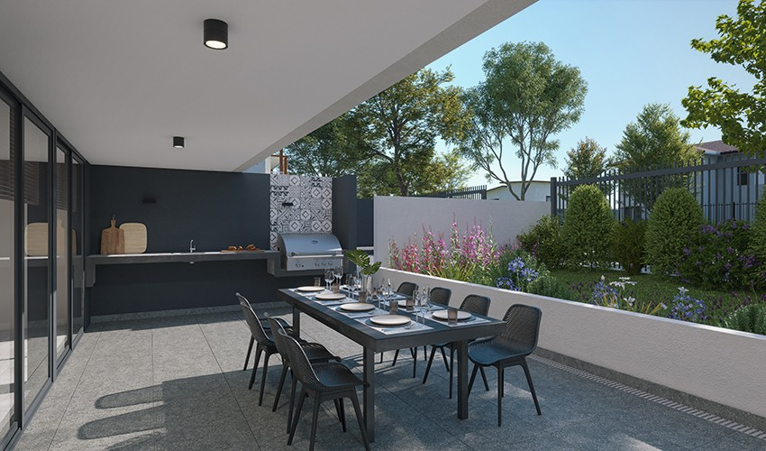
Tipologías
Plantas de departamentos
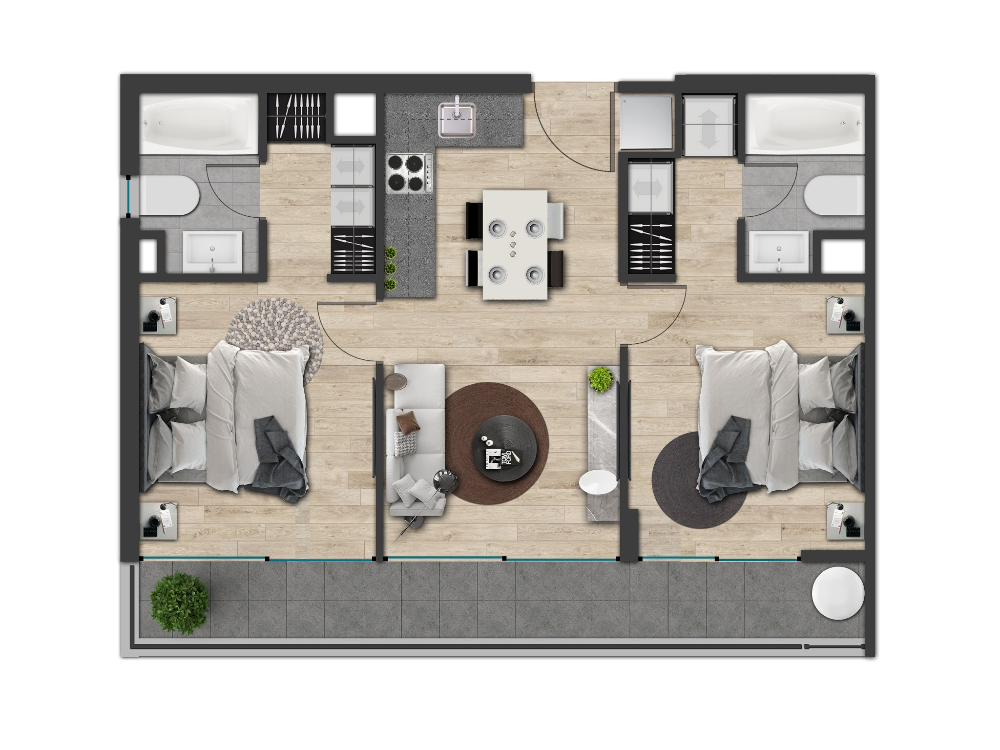
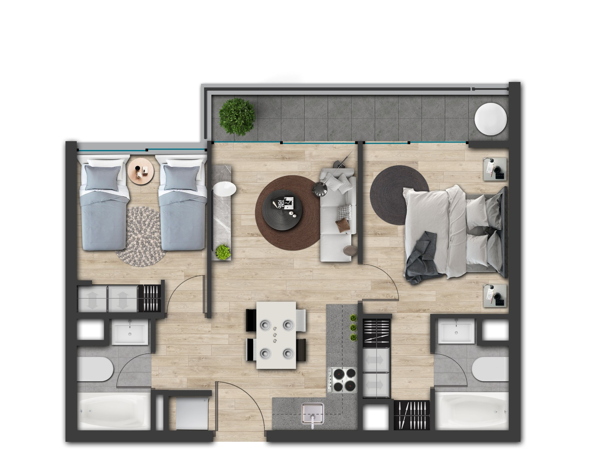
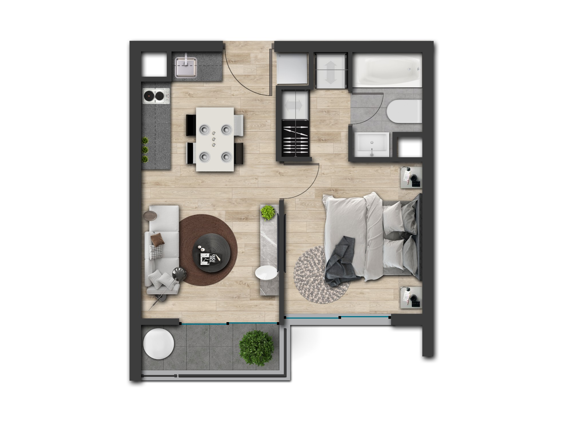
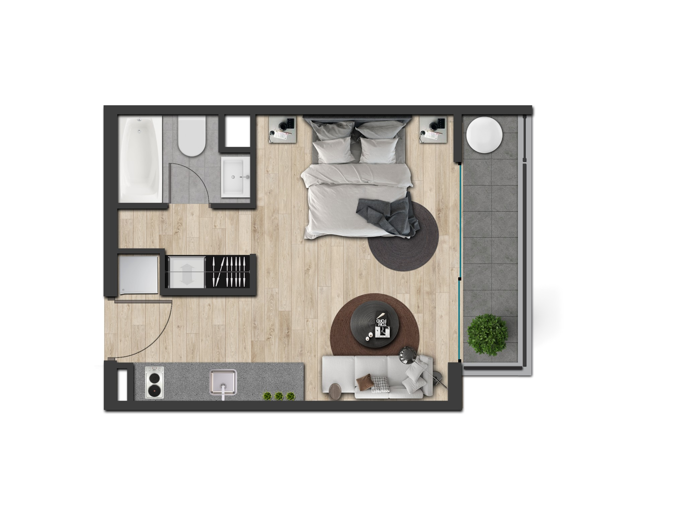
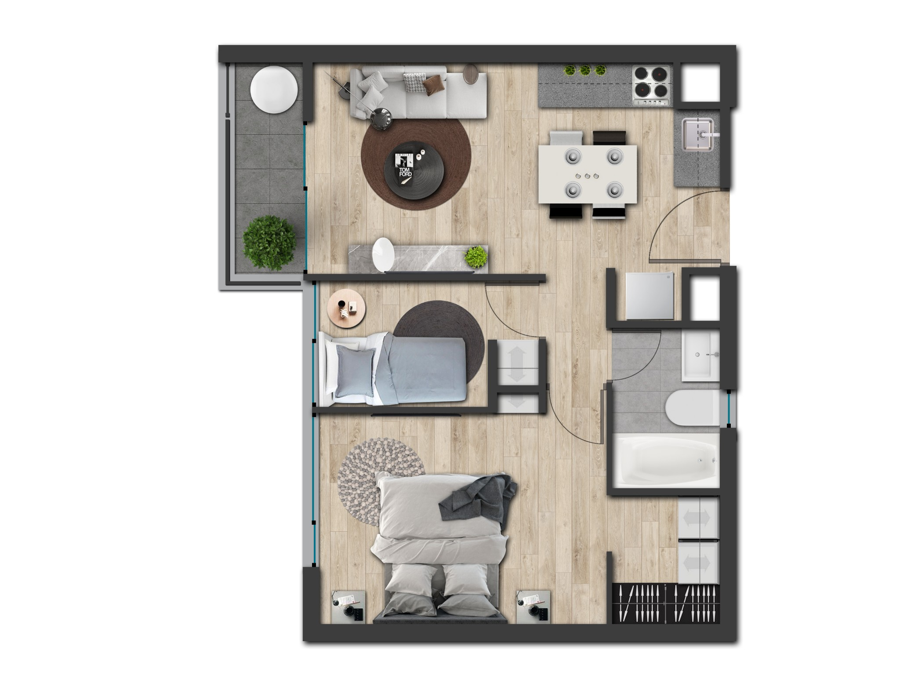